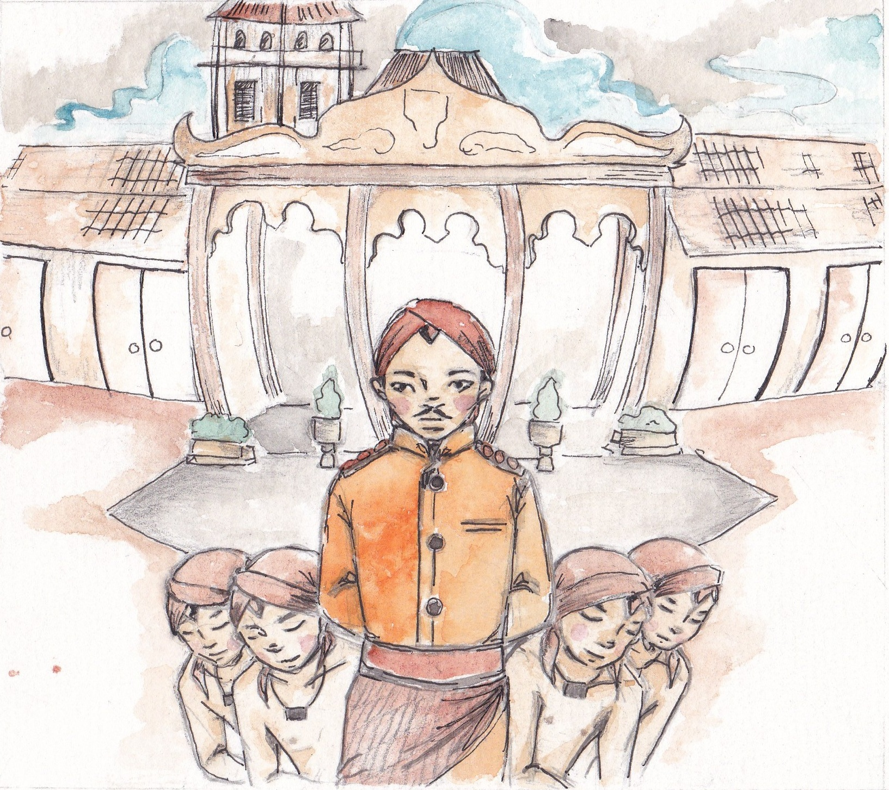
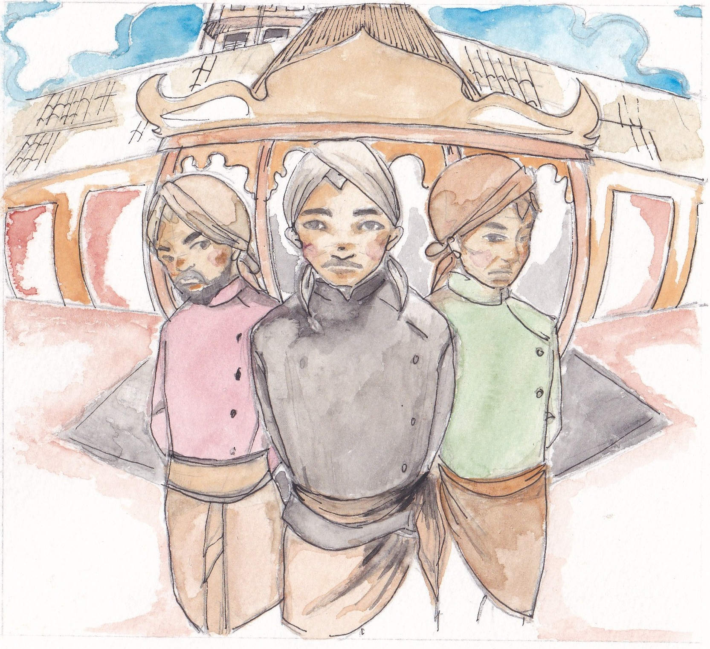
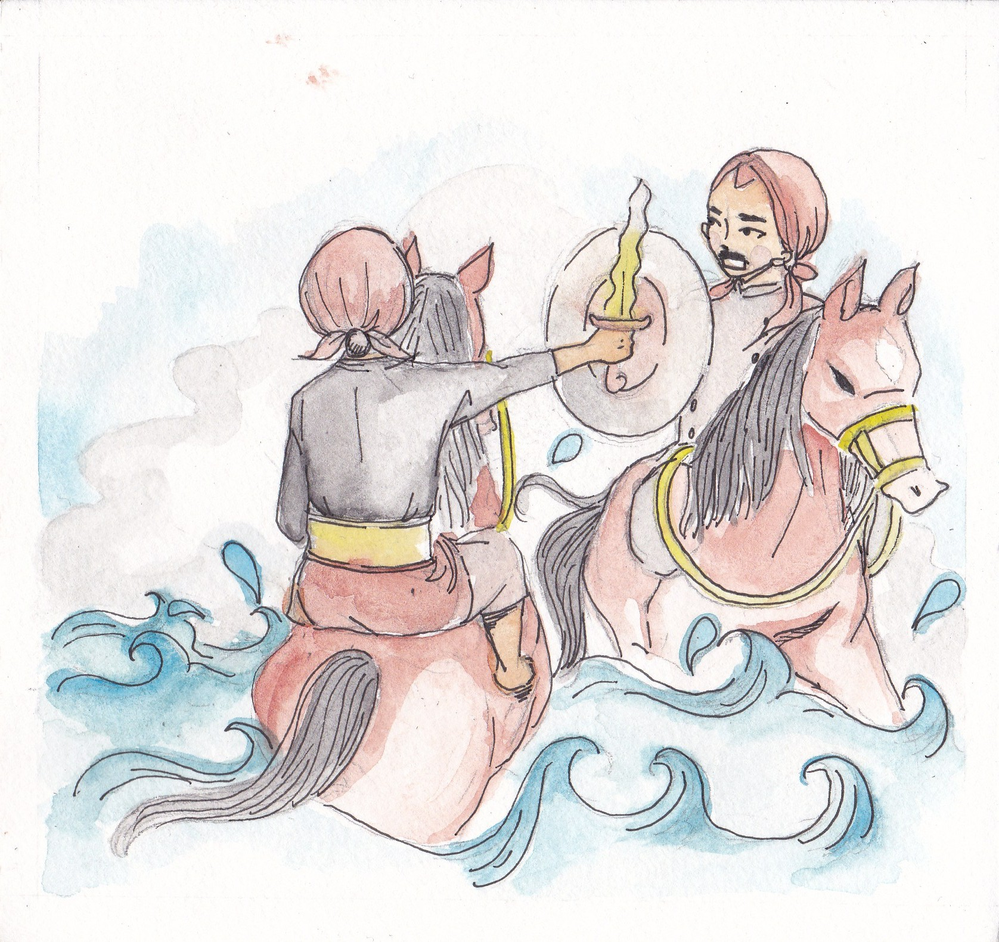
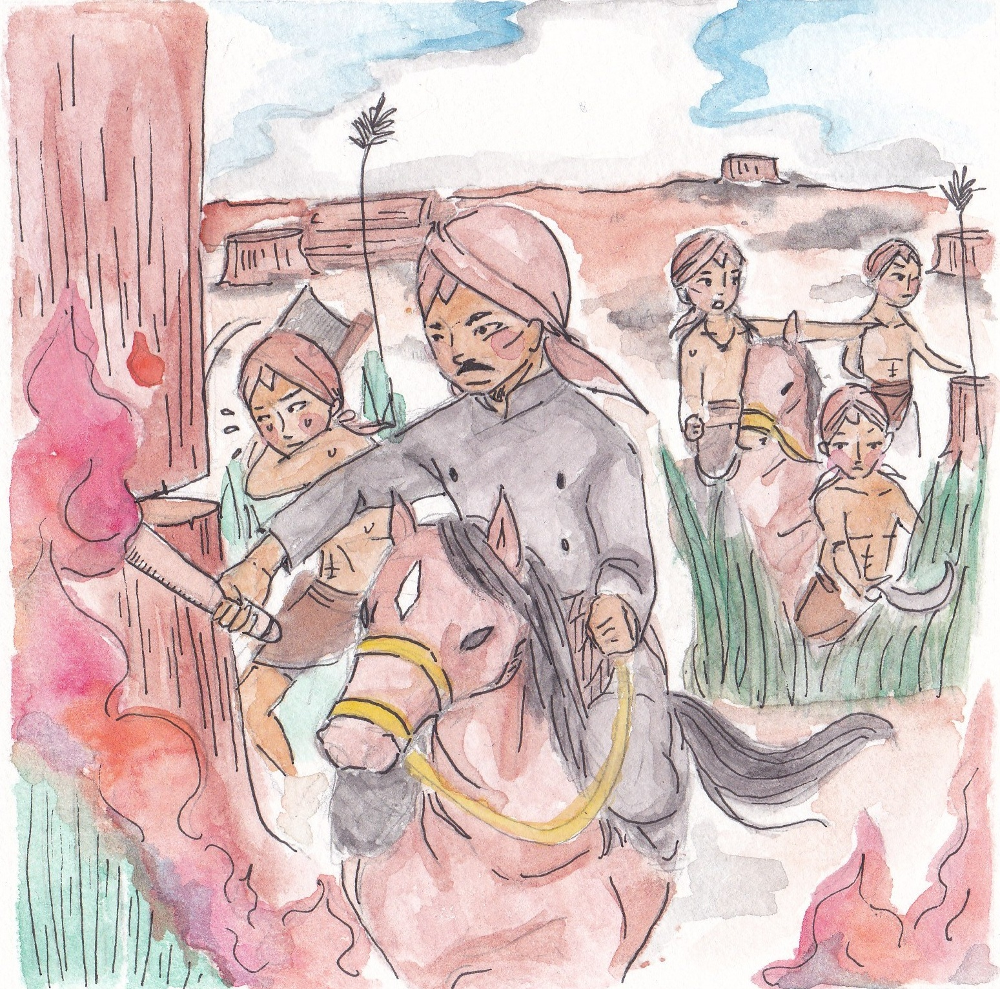
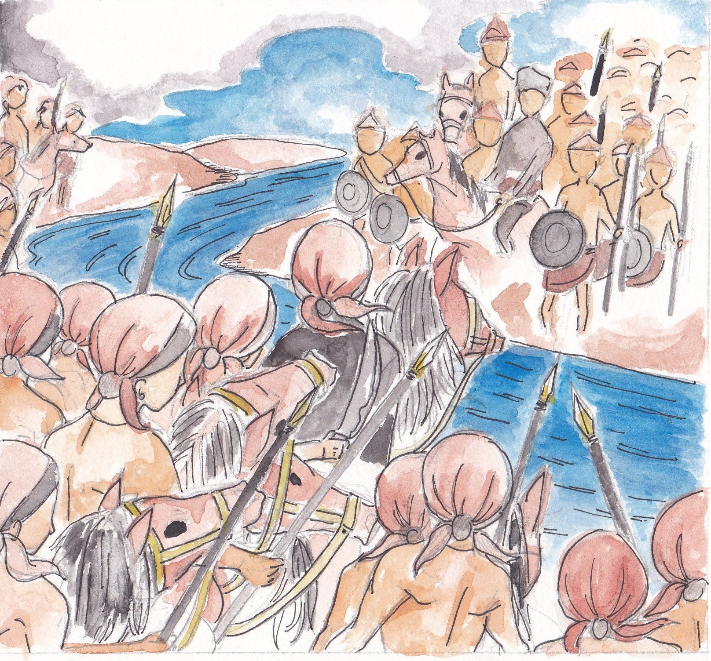
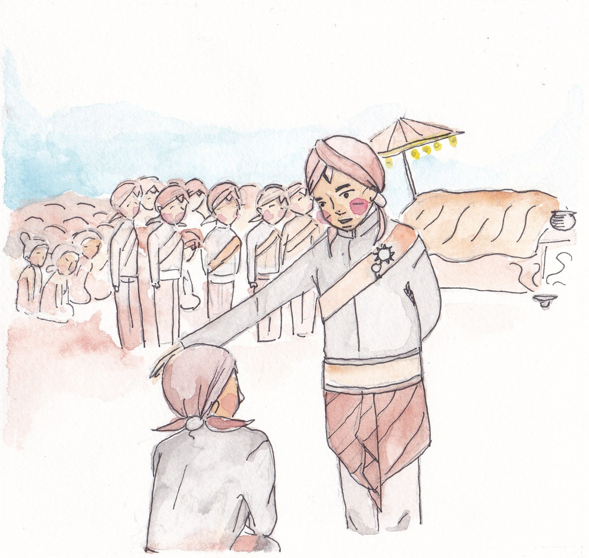
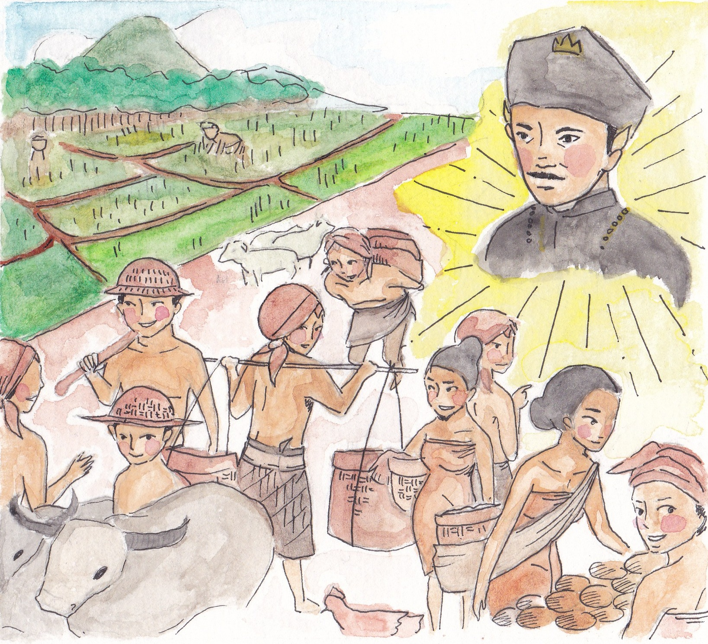
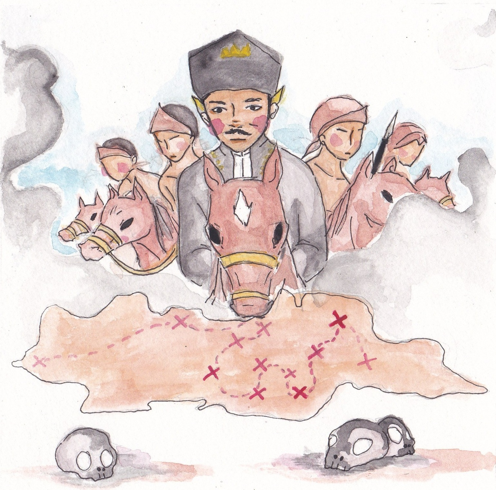
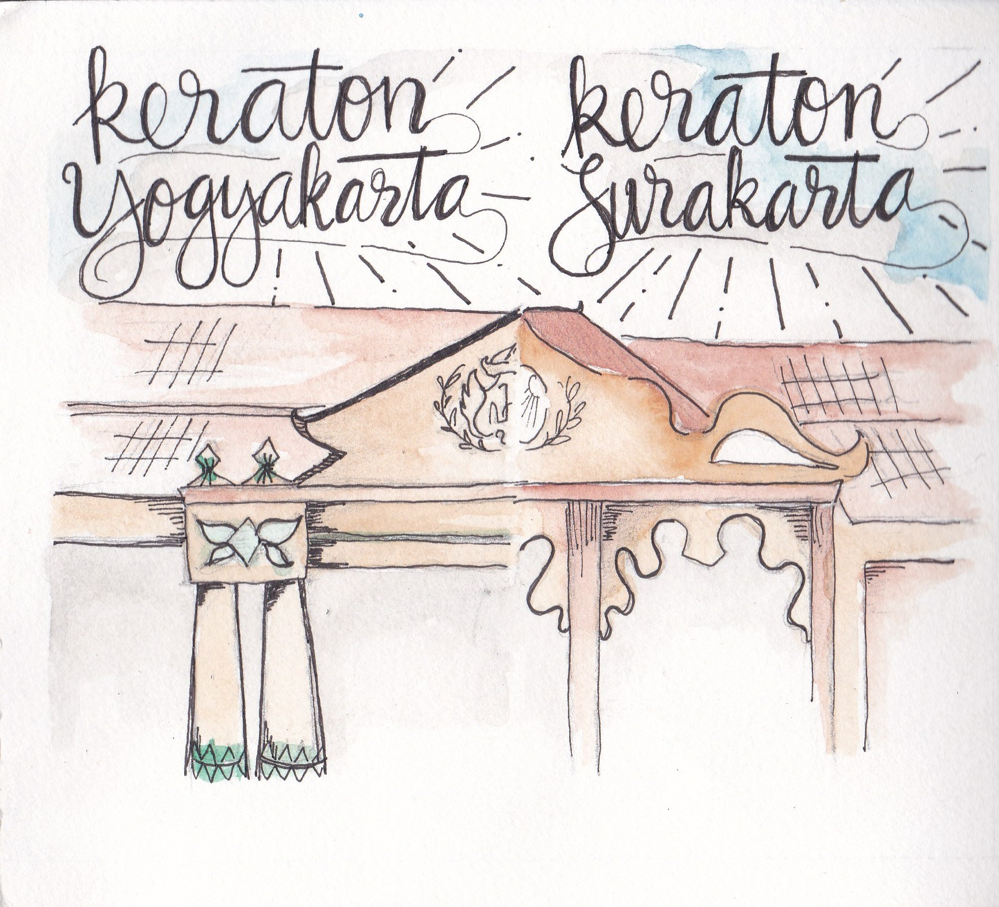

Asal mula berdirinya Kesultanan Mataram Islam
Kesultanan Mataram adalah kerajaan Islam di Pulau Jawa yang pernah berdiri pada abad ke-17. Kesultanan Mataram Islam berdiri dari tahun 1586 M sampai tahun 1755 M. Kerajaan ini dipimpin suatu dinasti keturunan Ki Ageng Sela dan Ki Ageng Pemanahan yang dipercaya masi mempunyai keturunan dari Majapahit. Asal-usul dimulainya kekuasaan Kesultanan Mataram disebutkan bahwa berkaitan erat dengan Kesultanan Demak dan Kesultanan Pajang. Setelah Demak mengalami kemuduran, ibukotanya dipindahkan ke Pajang. Kesultanan Pajang merupakan kerajaan besar di Jawa yang mempunyai beberapa daerah kekuasaan seperti: Pajang, Madiun, Mataram, Pati, Prawata (Demak), Kalinyamat (Jepara), dan Jipang (Bojonegoro).
Sosok Ki Ageng Pemanahan
Ki Ageng Pemanahan adalah sosok pembuka Tanah Alas Mentaok (Mataram) yang akan menjadi daerah asal muasal berdirinya Kesultanan Mataram. Ki Ageng Pemanahan merupakan cucu dari Ki Ageng Sela dan putra dari Ki Ageng Ngenis. Ki Gede Pemanahan diberi nama sesuai dengan daerah yang dikuasakan kepadanya oleh Sultan Hadiwijaya pada saat itu. Daerah itu bernama Manahan, suatu daerah di sebelah barat Solo. Nama sebenarnya Ki Gede Pemanahan tidak disebutkan dalam Babad Tanah Djawi. Dari Sadjarah Dalem (Padmasoesastra, 1912) juga dari Van der Horst (1707) pernah disebutkan sebuah nama kecil yaitu Bagus Kacung
Ki Ageng Pemanahan bersama dengan saudaranya, Ki Panjawi, mengabdi kepada Sultan Hadiwijaya yang saat itu merupakan Raja dari Kerajaan Pajang. Mereka memiliki paman bernama Ki Juru Martani sebagai penasehat yang bijaksana. Ketiga tokoh ini memiliki hubungan yang sangat erat dan merupakan orang-orang kepercayaan Sultan Hadiwijaya.
Peristiwa Pemberontakan Arya Penangsang
Perjalanan Ki Ageng Pemanahan dimulai dari peperangan melawan Arya Penangsang. Arya Penangsang merupakan Raja Jipang yang ingin menjadi penguasa Tanah Jawa. Guru spritual Arya Penangsang, Sunan Kudus, berkata bahwa untuk menjadi penguasa Tanah Jawa harus menumpaskan Sultan Hadiwijaya. Arya Penangsang pun mencoba membunuh Sultan Hadiwijaya dengan mengirimkan utusan namun tidak berhasil. Arya Penangsang pun berniat akan membunuh Sultan Hadiwijaya dengan tangannya sendiri.
Sultan Hadiwijaya yang mengetahui rencana Arya Penangsang pun membuat sayembara dan berjanji kepada Ki Ageng Pemanahan dan Ki Panjawi jika keduanya berhasil meredakan pemberontakan Arya Penangsang maka akan mendapatkan hadiah tanah Pati dan Alas Mentaok (Mataram). Sultan Hadiwijaya memilih tidak memerangi Arya Penangsang sendiri karena masih bersaudara dan merupakan bagian dari keluarga besar Kesultanan Demak. Ki Ageng Pemanahan dan Ki Panjawi pun menyanggupi dan bersedia mengikuti sayembara tersebut atas nasehat Ki Martani, paman sekaligus penasehat kerajaan Pajang. Perang terjadi di tepian Sungai Caket (Bengawan Solo). Perang ini dimenangkan oleh Ki Gede Pemanahan dan Ki Panjawi (cerita mendetil dapat dibaca dalam Babad Pakualaman).
Pembukaan Tanah Alas Mentaok (Awal berdirinya Kerajaan Mataram)
Sultan Hadiwijaya harus menepati janjinya yaitu memberikan tanah Pati dan Alas Mentaok kepada Ki Ageng Pemanahan dan Ki Panjawi. Namun, Sultan Hadiwijaya tidak langsung memberikan tanah tersebut karena khawatir dengan ramalan yang dikeluarkan oleh Sunan Giri bahwa Mataram kelak akan menjadi kerajaan yang besar yang melebihi kebesaran Kerajaan Pajang. Hal tersebut membuat Sultan Hadiwijaya resah dan terus menunda memberikan tanah tersebut kepada Ki Ageng Pemanahan dan Ki Panjawi. Mengetahui kondisi tersebut, Sunan Kalijaga yang juga merupakan guru dari Sultan Hadiwijaya menjadi penengah dalam permasalahan tersebut. Sunan Kalijaga meminta Sultan Hadwijaya untuk memberikan tanah tersebut dengan alasan takdir tidak dapat direkayasa dan membuat Ki Ageng Pemanahan bersumpah akan setia kepada Sultan Hadiwijaya. Sultan Hadiwijaya akhirnya menyerahkan tanah Pati dan Alas Mentaok pada tahun 1556.
Pada saat itu Alas Mentaok adalah hutan belantara bekas lokasi kerajaan pada masa
lalu yang sudah lama
ditinggalkan sedangkan Pati sudah menjadi kota dengan penduduk yang maju. Karena Ki Ageng Pemanahan
menghormati kakaknya, ia pun menawarkan Ki Panjawi untuk memilih Pati atau Alas Mentaok sebagai
tanahnya. Ki
Panjawi memilih Pati yang makmur dan Ki Ageng Pemanahan menerima tanah Alas Mentaok (Mataram) untuk
dirinya.
Setelah mendapatkan hadiah tanah Alas Mentaok (Mataram), Ki Ageng Pemanahan harus merambah hutan
belantara
untuk membuka daerah tersebut dan menjadikannya kota baru. Ia ditemani oleh Ki Juru Martani beserta
keluarga
dan pengikutnya pun berangkat dari Kerajaan Pajang ke Alas Mentaok (Mataram).
(Rute perjalanan Ki Ageng Pemanahan dapat dilihat pada peta.)
Sedikit demi sedikit Alas Mentaok mulai memiliki penduduk yang mengisi daerah tersebut dan Ki Ageng Pemanahan mulai mendirikan istananya di atas tanah desa yang dipimpinnya (sekarang berlokasi di daerah Kotagede, DI Yogyakarta). Ki Ageng Pemanahan diberi gelar Ki Ageng Mataram. Ki Ageng Mataram wafat pada tahun 1584 dan digantikan oleh putranya yang bernama Sutawijaya atau lebih dikenal dengan nama Panembahan Senopati.
Masa Kekuasaan Panembahan Senopati
Setelah Ki Ageng Mataram wafat, kekuasaan berpindah kepada putranya yang bernama Sutawijaya. Sutawijaya yang bergelar “Mas Ngabehi Loring Pasar” merupakan anak angkat Sultan Hadiwijaya, lalu diangkat oleh Sultan sebagai penguasa di wilayah Mataram menggantikan Ki Ageng Mataram. Sutawijaya bercita-cita untuk menguasai Jawa dan berusaha mewujudkan keinginannya dengan mulai mengumpulkan pengikut dari berbagai daerah.
Karena keinginannya menguasai Jawa, Sutawijaya tidak mau berkunjung ke Pajang dan menghadap kepada Sultan Hadiwijaya sesuai dengan kewajibannya. Keadaan ini dikarenakan ia merasa telah memiliki Tanah Mataram yang semakin makmur. Sutawijaya dianggap melawan dan memberontak kepada Kerajaan Pajang. Hal ini membuat Sultan Hadiwijaya marah yang kemudian menyerang Mataram. Penyerangan ini akhirnya menimbulkan perang di antara Kerajaan Pajang dan Mataram pada tahun 1587. Perang ini terjadi di Randulawang, yaitu daerah sekitar Prambanan. Pasukan Pajang dapat dipukul mundur meskipun jumlah mereka jauh lebih banyak. Sultan Hadiwijaya jatuh sakit dalam perjalanan pulang ke Pajang. Ia akhirnya meninggal dunia namun sebelumnya sempat berwasiat agar anak-anaknya jangan ada yang membenci Senapati serta harus tetap memperlakukannya sebagai kakak sulung. Senapati sendiri ikut hadir dalam pemakaman ayah angkatnya itu.
Perkembangan Kekuasaan Kesultanan Mataram
Pada tahun 1588, Mataram mulai berkembang menjadi kerajaan dengan Sutawijaya sebagai raja pertamanya yang bergelar Panembahan Senopati. Kerajaan Pajang yang sedang dipimpin oleh dan Pangeran Banowo berwasiat untuk menggabungkan Pajang dan Mataram. Kemudian, Pajang menjadi bawahan Mataram pada tahun 1590.
Tahun-tahun berikutnya, Panembahan Senopati banyak melakukan penaklukan ke daerah timur Jawa, hingga akhirnya wilayah-wilayah penting seperti Jepara, Madiun, Kediri, Bojonegoro, dan sebagian Surabaya berada dibawah kekuasaan Mataram. Pada masa kekuasaannya, Panembahan Senopati telah membuat Mataram yang tadinya hanya berupa pemukiman kecil di pedalaman hingga menjadi kerajaan yang memiliki wilayah kekuasaan yang luas meliputi daerah di Jawa Tengah dan Jawa Timur.
Masa Kekuasaan Sultan Agung
Pada tahun 1601 Panembahan Senopati wafat dan digantikan oleh putranya, Mas Jolang yang bergelar Panembahan Hanyokrowati setelah dilantik menjadi Raja Mataram. Masa kekuasaan Panembahan Hanyokrowati hanya sebentar karena kecelakaan saat berburu di hutan Krapyak yang merenggut nyawanya pada tahun 1613. Oleh karena itu, kemudian ia dikenal sebagai Panembahan Seda Ing Krapyak yang artinya raja yang meninggal di Krapyak.
Panembahan Hanyokrowati kemudian digantikan oleh putra bungsunya yaitu Adipati Martapura. Kekuasaan Adipati Martapura hanya sebentar lalu digantikan oleh kakak sulungnya (beda ibu) yang bernama Mas Rangsang. Sebenarnya secara teknis Raden Mas Rangsang adalah Sultan ke-empat Kesultanan Mataram, namun secara umum dianggap sebagai Sultan ketiga karena adiknya yang sakit diangkat sebagai raja hanya sebagai pemenuhan janji ayahnya.
Raden Mas Rangsang naik takhta pada tahun 1613 dalam usia 20 tahun menggantikan Adipati Martapura. Sesudah naik tahta Mas Rangsang mendapat gelar Sultan Agung Prabu Hanyokrokusumo atau lebih dikenal dengan sebutan Sultan Agung. Pada masa kekuasaan Sultan Agung Kerajaan Mataram sampai pada puncak kejayaannya. Ibu kota Mataram saat itu masih berada di Kota Gede. Pada tahun 1614 mulai dibangun istana baru di desa Karta, sekitar 5 km di sebelah barat daya Kota Gede, yang kelak mulai ditempati pada tahun 1618. Sultan Agung mewujudkan dan mempertahankan kejayaan melalui upaya militer, administrasi negara yang baik, kebudayaan serta agama.
Ekspansi wilayah Kerajaan Mataram
Dalam pemerintahannya, Sultan Agung banyak melakukan ekspansi ke beberapa wilayah di Jawa dalam rangka perluasan wilayah kerajaan Mataram. Ia melanjutkan perjuangan Mataram untuk menyatukan Pulau Jawa dengan melakukan penaklukan wilayah menggunakan taktik penyerangan secara militer maupun politik. Keberhasilan besar Kesultanan Mataram yaitu dalam menaklukan daerah di timur Jawa, yaitu menaklukan Surabaya. Sultan Agung belajar dari ayah dan kakeknya yang gagal dalam penyerangan terhadap Surabaya. Ia tidak serta merta menyerang Surabaya dengan membawa pasukan yang banyak karena ia tahu bahwa Surabaya mempunyai sekutu yang siap membantu dalam mempertahankan daerah kekuasaannya. Selain itu, Kota Surabaya memiliki pertahanan yang sangat kuat.
Sultan Agung menyadari hal itu sehingga dalam rangka menaklukkan Surabaya ia tidak langsung menyerang pusat kota, namun ia terlebih dahulu menguasai daerah-daerah bawahan yang menjadi pemasok bahan makanan ke pusat kota Surabaya. Beberapa daerah yang berhasil ditaklukan adalah Wirasaba (1615), Lasem (1616), Pasuruan (1617), dan Tuban (1619).
Pada masa Sultan Agung, seluruh daerah di Jawa hampir berhasil dikuasai oleh Mataram kecuali Banten karena terhalang oleh Batavia yang tidak berhasil ditaklukkan. Pada masa itu, Batavia masih diduduki militer VOC Belanda. Sultan Agung dan pasukannya mencoba menaklukan daerah Batavia namun gagal. (Kekuasaan wilayah Mataram dibawah pimpinan Sultan Agung dapat dilihat pada peta)
Pasca Kekuasaan Sultan Agung
Pada tahun 1645 Sultan Agung wafat dan dimakamkan di Imogiri, ia digantikan oleh putranya yg bergelar Amangkurat (Amangkurat I). Amangkurat I memindahkan lokasi keraton ke Pleret (1647), tidak jauh dari Kerta. Selain itu, ia tidak lagi menggunakan gelar sultan, melainkan "sunan" (dari "Susuhunan" atau "Yang Dipertuan"). Pemerintahan Amangkurat I kurang stabil karena banyak ketidakpuasan dan pemberontakan. Pada masanya, terjadi pemberontakan besar yang dipimpin oleh Trunajaya dan memaksa Amangkurat bersekutu dengan VOC. Ia wafat di Tegalarum (1677) ketika mengungsi sehingga dijuluki Sunan Tegalarum. Penggantinya, Amangkurat II (Amangkurat Amral), sangat patuh pada VOC sehingga kalangan istana banyak yang tidak puas dan pemberontakan terus terjadi. Pada masanya, kraton dipindahkan lagi ke Kartasura (1680), sekitar 5km sebelah barat Pajang karena kraton yang lama dianggap telah tercemar.
Pengganti Amangkurat II berturut-turut adalah Amangkurat III (1703-1708), Pakubuwana I (1704-1719), Amangkurat IV (1719-1726), Pakubuwana II (1726-1749). VOC tidak menyukai Amangkurat III karena menentang VOC sehingga VOC mengangkat Pakubuwana I (Puger) sebagai raja. Akibatnya Mataram memiliki dua raja dan ini menyebabkan perpecahan internal. Amangkurat III memberontak dan tertangkap di Batavia lalu dibuang ke Ceylon.
Perpecahan Mataram
Kekacauan politik baru dapat diselesaikan pada masa Pakubuwana III setelah pembagian wilayah Mataram menjadi dua yaitu Kesultanan Ngayogyakarta dan Kasunanan Surakarta tanggal 13 Februari 1755. Pembagian wilayah ini tertuang dalam Perjanjian Giyanti (nama diambil dari lokasi penandatanganan, di sebelah timur kota Karanganyar, Jawa Tengah). Berakhirlah era Mataram sebagai satu kesatuan politik dan wilayah. Walaupun demikian sebagian masyarakat Jawa beranggapan bahwa Kesultanan Yogyakarta dan Kasunanan Surakarta adalah "ahli waris" dari Kesultanan Mataram. Kesultanan Yogyakarta diperintah oleh Raja Mangkubumi yang diberi gelar Hamengkubuwono I, sedangkan Kasuhunan Surakarta diperintah oleh Susuhunan Pakubuwono II.
Pada tahun 1757, berdasarkan Perjanjian Salatiga, Kerajaan Mataram dibagi menjadi
tiga, yaitu Kesultanan
Yogyakarta, Kasunanan Surakarta dan Mangkunegaran. Daerah Mangkunegaran diperintah oleh Mas Said
yang diberi
gelar Pangeran Adipati Arya Mangkunegaran.
Pada tahun 1813 Kesultanan Yogyakarta dibagi menjadi dua kerajaan, yaitu kesultanan Yogyakarta
dan
Kerajaan Pakualaman, yang diperintah oleh Paku Alam yang semula adalah Adipati Kesultanan
Yogyakarta. Dengan
demikian Kerajaan Mataram dibagi menjadi empat kerajaan kecil, yaitu Kesultanan Yogyakarta,
Kasunanan
Surakarta, Kerajaan Mangkunegaran dan Kerajaan Pakualaman.
(dapat dibaca secara lengkap pada buku "Disintegrasi Mataram di Bawah Mangkurat I", De Graaf).